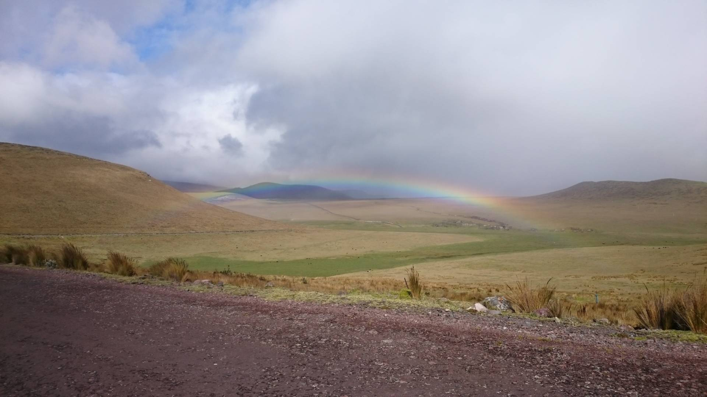
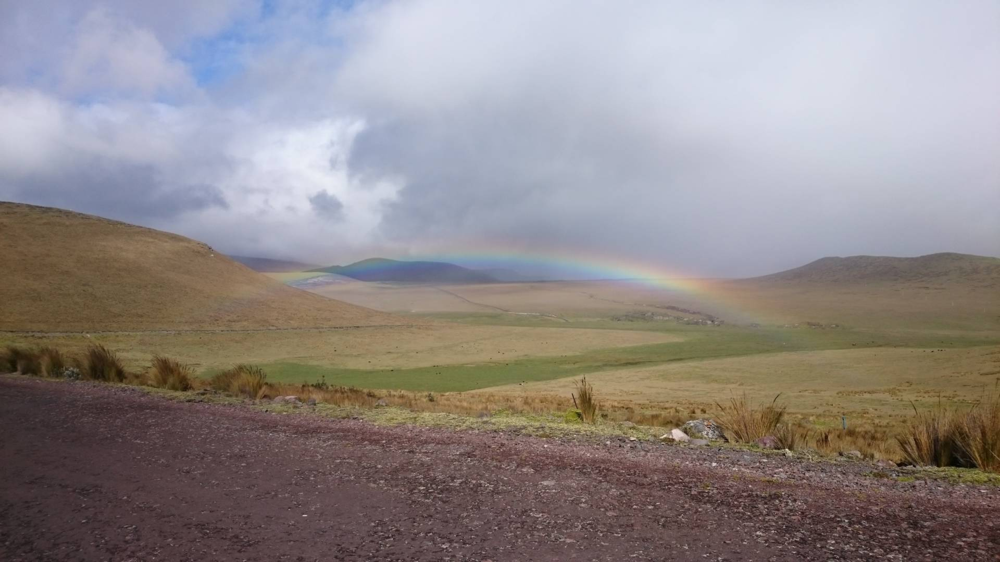

Sobre la Laguna
La Laguna La Mica es un embalse natural ubicado en la Reserva Ecológica Antisana, en la provincia de Napo. Rodeada de páramo andino, es una fuente vital de agua y refugio para la fauna silvestre.

Reserva Ecológica Antisana - Napo, Ecuador
La Laguna La Mica es un embalse natural ubicado en la Reserva Ecológica Antisana, en la provincia de Napo. Rodeada de páramo andino, es una fuente vital de agua y refugio para la fauna silvestre.


 

Desde Quito, toma la vía al Valle de los Chillos hasta el pueblo de Pintag. Luego continúa por la carretera ecológica hacia la Reserva Ecológica Antisana. A lo largo del trayecto encontrarás señalizaciones. El acceso es controlado por el Ministerio del Ambiente y es necesario registrarse. El recorrido toma entre 1h30 a 2h en vehículo particular.
¿Deseas visitarla con guía o saber más?
Email: grupo@lamica.ec
WhatsApp: +593 98 049 1612